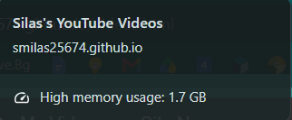

Added 2 new video (+XML updated, one of the videos was yesterday)
BIG CHANGE: Added a new page for all (most) of my videos because of this:

That's pretty bad.
Personal news
Started speedrunning Silksong as well, I think it's more likely I continue doing
this rather than speedrunning Hollow Knight.
May 23rd 2026 #2
Site updates (finished XML testing!)
Added instructions for RSS feeds
Added new video (+XML updated)
Added new link
Removed a note on the videos page, I will keep it here for archival reasons:
"Note: CK2 scenario timelapse is no longer active bc I didn't save the file and the recording
file corrupted. If want to know, Tibet won by annexing everything. Hoi4 is better because you
can't just marry into a rich family and annex states, but I guess that's how medival politics
work."
Personal news
Forgot it was also my birthday yesterday! lol.
May 23rd 2026 #1
Site updates (in the middle of XML testing)
Added XML file for RSS feeds
Added old video
Personal news
Finished HK Video! Anyways that video will be uploaded soon. I'm playing the second
game now and will be uploading a seperate video of each of the acts (I just started
act 2). Also, my final survival video (the save is lost) will be uploaded as well
(without a thumbnail).
April 25th 2026
Site updates
Added site news page
Fixed navigation bar CSS
Added new links
Personal news
Almost finished my first Hollow Knight playthrough and
I will upload a compilation of Bosses and probably a seperate video for the pantheon playhrough.
I'm only planning on beating the first three as of now though.